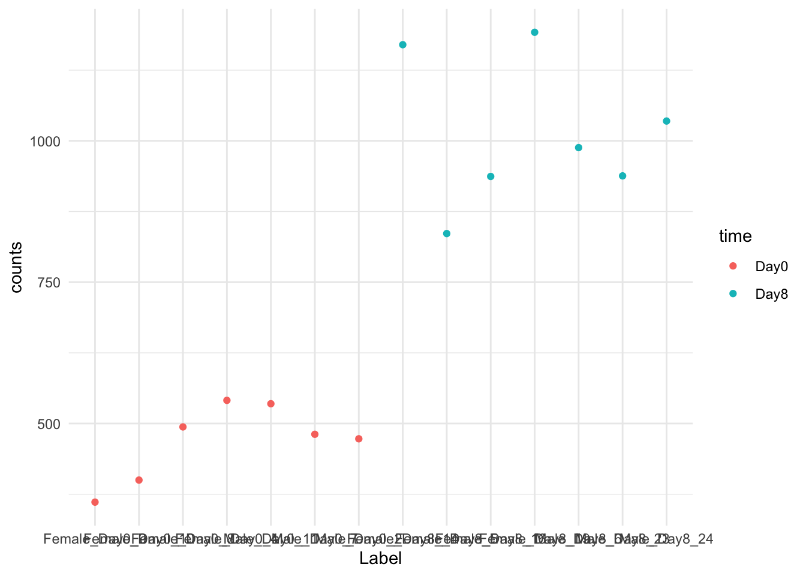

Experimental Design / QC
Learning Objectives
- Explain the the relationship between population mean vs. sample mean as the sample size increase
- Distinguish between technical and biological replicates and what kinds of results to expect from each
- Explain the basics of experimental design, confounding, batch effects, and when to consult the sequencing core
- Explain the confounding issues of library size and RNA composition
- Construct a design matrix that reflects the study’s experimental design
- Analyze the process of filtering out genes with low read counts
Experimental Design of RNAseq Experiments
Today, we will look how experimental design plays a large role in the way we analyze RNA-seq data. Experimental design seeks to make sense data variation via careful design of conditions.
If you are not familiar with some of these technical terms in the quote, we will go over them shortly.
Background: What are we estimating?
Single, randomized group
We will first start with looking at the most simple experimental design: a single, randomized group. Once we are comfortable with this, then we will return to a two group comparision in classic differential gene expression.
When we run experiments, we are usually analyzing a subset of the population, called a sample. Let’s define them clearly:
Population: The entire collection of individual units that a researcher is interested to study.
Sample: A smaller collection of individual units that the researcher has selected to study.
When we carry out our experiment, we perform some form of measurement on our samples, such as an experimental assay. Then, it is common to look at the mean and variance of our measurements to summarize our samples. This sample mean and sample variance are our best guess at the population mean and population variance.
There is a crucial relationship between samples, populations, and sample size: As the sample size gets larger, then the sample mean approaches the population mean and the sample variance approaches the population variance. This is called the Law of Large Numbers.
Let’s take at the following experiment as a demo: The goal of this study was to determine the effect of an upper-respiratory infection on changes in RNA transcription occurring in the cerebellum on mouse models. Control mice were inoculated with saline at Day 0 and measured on the same day. Case mice were inoculated with Influenza A and measured at day 8 post-infection.
Let’s take a look at RNA-seq measurement of the gene Asl for the control samples.
expression_plot <-
GSE96870_Case_Control |>
filter(.feature == "Asl" & time == "Day0") |>
ggplot(aes(x = Label, y = counts)) +
geom_point() +
theme(axis.text.x = element_text(angle = 90)) + theme_minimal()
expression_plot
We have 7 samples here, and we would compute the mean to get the sample mean for the counts, approximating the population mean.
By these properties, it is obvious that the more samples, the better, one might say. But your choice of samples also has an impact on the population you are approximating!
Let’s consider the following thought experiment:
Would you rather: Sequence 7 replicates on the same cell line, or sequence one replicate each on 7 different cell lines?
What would the sample mean and sample variance of each experiment tell you?
In light of this example, let’s define two types of replicates:
Technical replicates: use the same biological sample to repeat the technical or experimental steps in order to accurately measure experimental variation.
Biological replicates use different biological samples of the same condition to measure the biological variation between samples.
Two-group comparisons
In classical differntial gene expression, you are often conducting a two-group comparison between case and control. Our case samples arise from the case population, and our control samples arise from the control population. When we look at the measurements of a gene, we look at the difference of sample mean betewen case and controls, which is on a log-transformed scale called log-fold change. As the sample size gets larger, our gene’s sample log-fold change gets closer to the population log-fold change. Similarly, the sample variance for from case and control groups for this gene gets closer to their respective population variances.
In the ideal experimental set-up, you want all of your samples to be randomly sampled and differ only by the case and control conditions. However, that rarely happens in real life. There are other variables lurking, also known as confounding variables, that may also have an impact on the outcome you want to measure.
Any relevant metadata, such as age, sex, subtype
Batch effects: the date of the experiment conducted, the person who performed the experiment, the reagents used, etc.
The sequencing technology
The amount of sequencing the sample received (more on this later in Normalization)
What else?
This means you need to think carefully what the sample log-fold change are telling you: does the sample log-fold change relate more to your experimental condition, or something else, such as batch effects? A variable can confound your experiment when you can’t tell whether this variable or your experimental design is affecting the outcome.
Example: We know that sex has large effects on gene expression, and if all of our control mice were female and all of the treatment mice were male, then our treatment effect would be confounded by the variable sex. We could not differentiate the effect of treatment from the effect of sex.
Example: We know that batch effect has large effects on gene expression, and if all of our control samples were processed by an experienced researcher on old reagents, and our treatment samples were processed by an trainee researcher on new reagents, our treatment effect would be confounded by batch effects.

Dealing with confounding
Solutions:
Ensure that the samples in all experimental conditions have the same values for the confounding variable - ie. all of the same sex, all of the same batch.
-
If not possible, make sure that all experimental conditions have a similar amount of variability of the confounding variable - ie. the both case and control groups have a balance of males and females, and various batches.

Source: Modern Statistics for Modern Biology, Chapter 13 - Save this information; we can eliminate these variability in the modeling process.
Let’s look at our experimental design. Have our potential confounders been accounted for?
as.data.frame(colData(GSE96870_Case_Control)) title geo_accession organism age sex
GSM2545337 CNS_RNA-seq_11C GSM2545337 Mus musculus 8 weeks Female
GSM2545338 CNS_RNA-seq_12C GSM2545338 Mus musculus 8 weeks Female
GSM2545348 CNS_RNA-seq_27C GSM2545348 Mus musculus 8 weeks Female
GSM2545353 CNS_RNA-seq_3C GSM2545353 Mus musculus 8 weeks Female
GSM2545343 CNS_RNA-seq_20C GSM2545343 Mus musculus 8 weeks Male
GSM2545349 CNS_RNA-seq_28C GSM2545349 Mus musculus 8 weeks Male
GSM2545354 CNS_RNA-seq_4C GSM2545354 Mus musculus 8 weeks Male
GSM2545336 CNS_RNA-seq_10C GSM2545336 Mus musculus 8 weeks Female
GSM2545342 CNS_RNA-seq_1C GSM2545342 Mus musculus 8 weeks Female
GSM2545351 CNS_RNA-seq_2C GSM2545351 Mus musculus 8 weeks Female
GSM2545380 CNS_RNA-seq_9C GSM2545380 Mus musculus 8 weeks Female
GSM2545341 CNS_RNA-seq_17C GSM2545341 Mus musculus 8 weeks Male
GSM2545346 CNS_RNA-seq_25C GSM2545346 Mus musculus 8 weeks Male
GSM2545347 CNS_RNA-seq_26C GSM2545347 Mus musculus 8 weeks Male
infection strain time tissue mouse Label Group
GSM2545337 NonInfected C57BL/6 Day0 Cerebellum 9 Female_Day0_9 Female_Day0
GSM2545338 NonInfected C57BL/6 Day0 Cerebellum 10 Female_Day0_10 Female_Day0
GSM2545348 NonInfected C57BL/6 Day0 Cerebellum 8 Female_Day0_8 Female_Day0
GSM2545353 NonInfected C57BL/6 Day0 Cerebellum 4 Female_Day0_4 Female_Day0
GSM2545343 NonInfected C57BL/6 Day0 Cerebellum 11 Male_Day0_11 Male_Day0
GSM2545349 NonInfected C57BL/6 Day0 Cerebellum 7 Male_Day0_7 Male_Day0
GSM2545354 NonInfected C57BL/6 Day0 Cerebellum 2 Male_Day0_2 Male_Day0
GSM2545336 InfluenzaA C57BL/6 Day8 Cerebellum 14 Female_Day8_14 Female_Day8
GSM2545342 InfluenzaA C57BL/6 Day8 Cerebellum 5 Female_Day8_5 Female_Day8
GSM2545351 InfluenzaA C57BL/6 Day8 Cerebellum 16 Female_Day8_16 Female_Day8
GSM2545380 InfluenzaA C57BL/6 Day8 Cerebellum 19 Female_Day8_19 Female_Day8
GSM2545341 InfluenzaA C57BL/6 Day8 Cerebellum 6 Male_Day8_6 Male_Day8
GSM2545346 InfluenzaA C57BL/6 Day8 Cerebellum 23 Male_Day8_23 Male_Day8
GSM2545347 InfluenzaA C57BL/6 Day8 Cerebellum 24 Male_Day8_24 Male_Day8Specific confounding issues in RNA-seq experiments
Besides looking at our metadata, there are two confounding variables that happen in nearly every RNA-seq experiment that people have spent a great deal of time developing tools to reduce confounding.
Library Size
Each sample will receive different number of reads for sequencing, and that may confound the our desired measurement of log-fold change. The total number of reads a sample received for sequencing is called the library size.
The following plot is the plot of the expression counts for the Asl gene across all samples in our dataset grouped by time. There appears to be a difference in expression across the samples by timepoint, but is that due to the experimental condition (Day 0 is control, Day 8 is case), or due to the number of sequencing reads each sample received?
expression_plot <-
GSE96870_Case_Control |>
filter(.feature == "Asl") |>
ggplot(aes(x = Label, y = counts, color = time)) +
geom_point() +
theme(axis.text.x = element_text(angle = 90)) + theme_minimal()
expression_plot
The issue is that the library sizes of each sample is different. If we compare the counts of each library, we’ll see they vary.
library(patchwork)
expression_plot <-
GSE96870_Case_Control |>
filter(.feature == "Asl") |>
ggplot(aes(x = Label, y = counts, color = time)) +
geom_point() + theme_minimal() +
theme(axis.text.x = element_blank()) +
ggtitle("Asl Expression count")
count_plot <-
GSE96870_Case_Control |>
group_by(Label, time) |>
summarise(total_counts=sum(counts)) |>
ggplot() +
aes(x=Label, y=total_counts, fill=time) +
geom_bar(stat="identity") + theme_minimal() +
theme(axis.text.x = element_text(angle = 90)) +
ggtitle("Library Size for each Sample") tidySummarizedExperiment says: A data frame is returned for independent data analysis.`summarise()` has grouped output by 'Label'. You can override using the
`.groups` argument.expression_plot/count_plot 
You will notice that the counts for Asl across the samples vary by Library size (if you can’t see it, look at the patterns of ups and downs). For us to truly compare the expression differences between our timepoints in our samples, we need to remove the effect of library size before we make the comparison between case and control.
The easiest way to remove this confounder is to divide gene count of each sample by its respective total library size. However, there’s a second confounder that needs to be simultaneously addressed…
RNA Composition
The second source of confounding has to do with the relative measurement of RNA-seq. Consider a single sample you just perforemd RNA-seq on. The assay provides a measure of the relative abundance of each gene in each RNA sample, but does not provide any measure of the total RNA output - it is a relative measurement. That is, the proportion of reads attributed to a given gene in a library depends on the expression properties of the whole sample rather than just the expression level of that gene.
Then, if a small proportion of highly expressed genes consume a substantial proportion of the total library size for a particular sample, this will cause the remaining genes to be under-sampled for that sample, confounding our analysis analysis.

The way we deal with this type of confounding is to make the assumption that most genes do not exhibit differential expression. DESeq2 divides gene count of each sample by its “size factor”, which is related to the sample’s library size for non-differentially expressed genes. If you want to see how it is calculated, this is a great tutorial.
Putting this together in practice
First, let’s do a little bit of clean up. Take a look at the total number of reads each gene received, and remove genes that just don’t have many reads across samples to be analyzed. Here’s the first five genes.
Xkr4 LOC105243853 LOC105242387 LOC105242467 Rp1
27023 12 2396 52 29 Let’s look at its distribution:
Min. 1st Qu. Median Mean 3rd Qu. Max.
0 1 39 12144 5198 2042743 We started with 42k genes:
Let’s remove any genes from the analysis if they received less than 5 reads total across samples.
GSE96870_filtered <- GSE96870_Case_Control[rowSums(assay(GSE96870_Case_Control)) >= 5, ]
dim(assay(GSE96870_filtered))[1] 26818 14Which reduced us to 27k genes.
Now, let’s create a DESeq object from our SummarizedExperiment object and our experimental design. We need to provide an experimental design formula. The design formula should have all of the factors in your metadata that account for major sources of variation in your data.
Let’s look at our metadata to remind us all the variables in there:
as.data.frame(colData(GSE96870_filtered)) title geo_accession organism age sex
GSM2545337 CNS_RNA-seq_11C GSM2545337 Mus musculus 8 weeks Female
GSM2545338 CNS_RNA-seq_12C GSM2545338 Mus musculus 8 weeks Female
GSM2545348 CNS_RNA-seq_27C GSM2545348 Mus musculus 8 weeks Female
GSM2545353 CNS_RNA-seq_3C GSM2545353 Mus musculus 8 weeks Female
GSM2545343 CNS_RNA-seq_20C GSM2545343 Mus musculus 8 weeks Male
GSM2545349 CNS_RNA-seq_28C GSM2545349 Mus musculus 8 weeks Male
GSM2545354 CNS_RNA-seq_4C GSM2545354 Mus musculus 8 weeks Male
GSM2545336 CNS_RNA-seq_10C GSM2545336 Mus musculus 8 weeks Female
GSM2545342 CNS_RNA-seq_1C GSM2545342 Mus musculus 8 weeks Female
GSM2545351 CNS_RNA-seq_2C GSM2545351 Mus musculus 8 weeks Female
GSM2545380 CNS_RNA-seq_9C GSM2545380 Mus musculus 8 weeks Female
GSM2545341 CNS_RNA-seq_17C GSM2545341 Mus musculus 8 weeks Male
GSM2545346 CNS_RNA-seq_25C GSM2545346 Mus musculus 8 weeks Male
GSM2545347 CNS_RNA-seq_26C GSM2545347 Mus musculus 8 weeks Male
infection strain time tissue mouse Label Group
GSM2545337 NonInfected C57BL/6 Day0 Cerebellum 9 Female_Day0_9 Female_Day0
GSM2545338 NonInfected C57BL/6 Day0 Cerebellum 10 Female_Day0_10 Female_Day0
GSM2545348 NonInfected C57BL/6 Day0 Cerebellum 8 Female_Day0_8 Female_Day0
GSM2545353 NonInfected C57BL/6 Day0 Cerebellum 4 Female_Day0_4 Female_Day0
GSM2545343 NonInfected C57BL/6 Day0 Cerebellum 11 Male_Day0_11 Male_Day0
GSM2545349 NonInfected C57BL/6 Day0 Cerebellum 7 Male_Day0_7 Male_Day0
GSM2545354 NonInfected C57BL/6 Day0 Cerebellum 2 Male_Day0_2 Male_Day0
GSM2545336 InfluenzaA C57BL/6 Day8 Cerebellum 14 Female_Day8_14 Female_Day8
GSM2545342 InfluenzaA C57BL/6 Day8 Cerebellum 5 Female_Day8_5 Female_Day8
GSM2545351 InfluenzaA C57BL/6 Day8 Cerebellum 16 Female_Day8_16 Female_Day8
GSM2545380 InfluenzaA C57BL/6 Day8 Cerebellum 19 Female_Day8_19 Female_Day8
GSM2545341 InfluenzaA C57BL/6 Day8 Cerebellum 6 Male_Day8_6 Male_Day8
GSM2545346 InfluenzaA C57BL/6 Day8 Cerebellum 23 Male_Day8_23 Male_Day8
GSM2545347 InfluenzaA C57BL/6 Day8 Cerebellum 24 Male_Day8_24 Male_Day8The variables that may contribute to variation to our data are: sex, time. There are variables such as infection, Label, Group that are encoded in Label and Group so we don’t need to include that information. The mouse variable is the unique identifier for each sample so that isn’t needed either.
Let’s create our DESeq object using SummarizedExperiment object and our design formula.
GSE96870_deseq <- DESeqDataSet(GSE96870_filtered, design = ~ sex + time)Warning in DESeqDataSet(GSE96870_filtered, design = ~sex + time): some
variables in design formula are characters, converting to factorsLet’s calculate our “size factor” to deal with the library size and RNA composition confounders via the estimateSizeFactors function. Afterwards, you can see the size factor on the rightmost column of our colData.
GSE96870_normalized <- estimateSizeFactors(GSE96870_deseq)
as.data.frame(colData(GSE96870_normalized)) title geo_accession organism age sex
GSM2545337 CNS_RNA-seq_11C GSM2545337 Mus musculus 8 weeks Female
GSM2545338 CNS_RNA-seq_12C GSM2545338 Mus musculus 8 weeks Female
GSM2545348 CNS_RNA-seq_27C GSM2545348 Mus musculus 8 weeks Female
GSM2545353 CNS_RNA-seq_3C GSM2545353 Mus musculus 8 weeks Female
GSM2545343 CNS_RNA-seq_20C GSM2545343 Mus musculus 8 weeks Male
GSM2545349 CNS_RNA-seq_28C GSM2545349 Mus musculus 8 weeks Male
GSM2545354 CNS_RNA-seq_4C GSM2545354 Mus musculus 8 weeks Male
GSM2545336 CNS_RNA-seq_10C GSM2545336 Mus musculus 8 weeks Female
GSM2545342 CNS_RNA-seq_1C GSM2545342 Mus musculus 8 weeks Female
GSM2545351 CNS_RNA-seq_2C GSM2545351 Mus musculus 8 weeks Female
GSM2545380 CNS_RNA-seq_9C GSM2545380 Mus musculus 8 weeks Female
GSM2545341 CNS_RNA-seq_17C GSM2545341 Mus musculus 8 weeks Male
GSM2545346 CNS_RNA-seq_25C GSM2545346 Mus musculus 8 weeks Male
GSM2545347 CNS_RNA-seq_26C GSM2545347 Mus musculus 8 weeks Male
infection strain time tissue mouse Label Group
GSM2545337 NonInfected C57BL/6 Day0 Cerebellum 9 Female_Day0_9 Female_Day0
GSM2545338 NonInfected C57BL/6 Day0 Cerebellum 10 Female_Day0_10 Female_Day0
GSM2545348 NonInfected C57BL/6 Day0 Cerebellum 8 Female_Day0_8 Female_Day0
GSM2545353 NonInfected C57BL/6 Day0 Cerebellum 4 Female_Day0_4 Female_Day0
GSM2545343 NonInfected C57BL/6 Day0 Cerebellum 11 Male_Day0_11 Male_Day0
GSM2545349 NonInfected C57BL/6 Day0 Cerebellum 7 Male_Day0_7 Male_Day0
GSM2545354 NonInfected C57BL/6 Day0 Cerebellum 2 Male_Day0_2 Male_Day0
GSM2545336 InfluenzaA C57BL/6 Day8 Cerebellum 14 Female_Day8_14 Female_Day8
GSM2545342 InfluenzaA C57BL/6 Day8 Cerebellum 5 Female_Day8_5 Female_Day8
GSM2545351 InfluenzaA C57BL/6 Day8 Cerebellum 16 Female_Day8_16 Female_Day8
GSM2545380 InfluenzaA C57BL/6 Day8 Cerebellum 19 Female_Day8_19 Female_Day8
GSM2545341 InfluenzaA C57BL/6 Day8 Cerebellum 6 Male_Day8_6 Male_Day8
GSM2545346 InfluenzaA C57BL/6 Day8 Cerebellum 23 Male_Day8_23 Male_Day8
GSM2545347 InfluenzaA C57BL/6 Day8 Cerebellum 24 Male_Day8_24 Male_Day8
sizeFactor
GSM2545337 0.9133349
GSM2545338 0.8598908
GSM2545348 1.0456296
GSM2545353 1.1116468
GSM2545343 1.1217156
GSM2545349 1.0209117
GSM2545354 0.9843337
GSM2545336 1.1394808
GSM2545342 0.8802526
GSM2545351 1.0487852
GSM2545380 1.1395748
GSM2545341 0.8886238
GSM2545346 0.9389596
GSM2545347 1.0149250If we divide counts by sizeFactor, then we get our scaled counts.
expression_plot <-
GSE96870_Case_Control |>
filter(.feature == "Asl") |>
ggplot(aes(x = Label, y = counts, color = time)) +
geom_point() + scale_y_continuous(limits=c(400, 1100)) +
theme_minimal() + theme(axis.text.x = element_blank()) +
ggtitle("Asl Expression count")
expression_normalized <- GSE96870_normalized |>
filter(.feature == "Asl") |>
mutate(scaled = counts / sizeFactor) |>
ggplot(aes(x = Label, y = scaled, color = time)) +
geom_point() + scale_y_continuous(limits=c(400, 1100)) +
theme_minimal() + theme(axis.text.x = element_blank()) +
ggtitle("Asl Expression count normalized")
(expression_plot + theme(legend.position = "none")) + expression_normalizedWarning: Removed 3 rows containing missing values or values outside the scale range
(`geom_point()`).Warning: Removed 2 rows containing missing values or values outside the scale range
(`geom_point()`).
As you can see, some, but not all of the intra-timepoint variation was removed, especially within the Day0 timepoint.
Whew, that’s all for experimental designs for now!
Here’s a nice summary of what we covered to ensure good experimental designs: “Generally speaking, a well-designed experiment is one that [has enough samples] and one in which technical artifacts and biological features that may systematically affect measurements are balanced, randomized or controlled in some other way in order to minimize opportunities for multiple explanations for the effect(s) under study.” (Bacher and Kendziorski 2016)
Appendix: How do I know how many samples to use?
Define “power”:
Reference to some packages for power calculations, such as PROPER. Takes consideration of:
Number of samples
Number of genes measured
Number of genes significant
Effect size of significant genes
p-value cutoff in multiple testing
Default datasets to simulate
-
Definition of power in multiple testing
- Probability we detect at least X% of genes that are truly different (at least some FC)
library(PROPER)
sim.opts.Cheung = RNAseq.SimOptions.2grp(ngenes = 20000, p.DE=0.05, lOD="cheung", lBaselineExpr="cheung")
simres = runSims(Nreps = c(3, 5, 7, 10), sim.opts=sim.opts.Cheung, DEmethod="DESeq2", nsims=5)Simulation number 1
Simulation number 2
Simulation number 3
Simulation number 4
Simulation number 5 powers = comparePower(simres, alpha.type="fdr", alpha.nominal=0.1, stratify.by="expr", delta=0.5)
summaryPower(powers) SS1 SS2 Nominal FDR Actual FDR Marginal power Avg # of TD Avg # of FD FDC
[1,] 3 3 0.1 0.36 0.39 60 35 0.57
[2,] 5 5 0.1 0.25 0.49 78 27 0.34
[3,] 7 7 0.1 0.20 0.55 89 23 0.26
[4,] 10 10 0.1 0.17 0.60 99 22 0.22plotPower(powers)
This suggests that you get more power out of more samples, rather than sequencing.
The most rigorous power benchmarks are to use controlled labatory experiments, with many samples and sequencing, and then downsample.
Appendix: Dimension Reduction to explore your data
Appendix: Other confounding factors to consider
Unobserved confounders
Are the demarcation of groups I’m comparing is independent of my molecular measurements? (double dipping): https://stat.uw.edu/seminars/double-dipping-problems-and-solutions-application-single-cell-rna-sequencing-data, https://anna-neufeld.github.io/datathin/